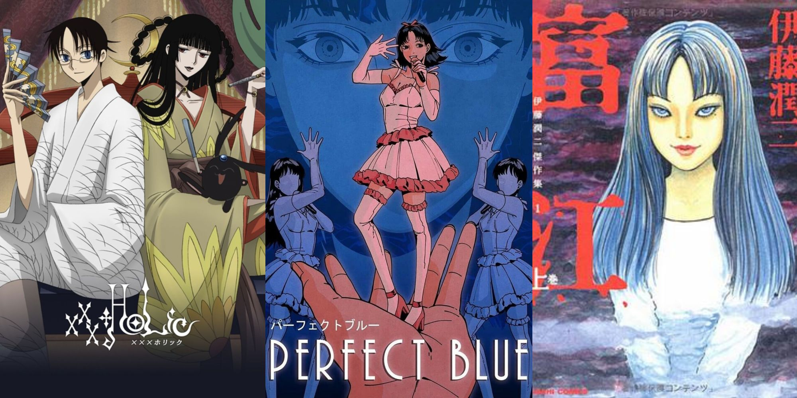

Anime 4 you
josei
Strictly speaking, josei refers to manga aimed at an adult female audience, as opposed to shoujo manga aimed at an audience of girls and women. and Josei is often fragile; Although the two were originally different genres, many manga works exhibit narrative and stylistic characteristics associated with shoujo and josei manga. This distinction is further complicated by a third genre of editorial manga, young girls , which emerged in the late 1980s as an intermediate genre between shoujo and josei. While Josei dramas are in most cases realistic stories about the lives of ordinary women, Romance Josei manga are generally melodramas influenced by television series, while erotic Josei manga has many similarities with erotic manga aimed at a heterosexual male audience. The emergence of manga aimed at adult female audiences as a genre in the 1980s was followed by the rise of gekiga in the 1950s and 1960s, which sought to use manga to tell serious stories. complete. The audience is fixed and matures as well as through the development of this manga genre. The genre was stigmatized in the late 1980s when it became associated with pornographic comics, but gained greater artistic legitimacy in the 1980s and 1990s when it shifted to stories focusing on social issues.
Hiiro no Kakera

Tamaki Kasuga is a young girl who revisits the small village of her childhood memories and finds herself entangled in her family's history and the supernatural dangers that surround it. While walking down a slope while waiting for someone her grandmother sent to take Tamaki back to the village, Tamaki found a small, round, white object with sticks attached to its limbs and the ability to speak. Soon after, she runs away and is chased by Tamaki. Soon, Tamaki finds himself in a place unlike his original world. She is attacked by three slimes and her mysterious man rushes in to save her, telling her to be quiet. After rescuing her, a young man named Takuma Onizaki accompanies her to the village where her grandmother lives. As soon as she arrived, she met her grandmother. It is then explained that she will continue to act as Tamayorihime's ancestor to seal the Onikirimaru sword with the help of her five guardians.
Uta no☆Prince-sama♪

Haruka Nanami, who dreams of becoming a composer and one day writing songs for her favorite idol, enters Saotome Gakuen, a prestigious performing arts school where students compete to become idols. or music producer. Haruka meets six classmates who are fighting to become idols. In her project, she had to collaborate with other students. If successful, she will become a member of Shining Agency after graduation. Additionally, romance is forbidden at her school
Chihayafuru

Chihaya Ayase is a girl who has spent most of her life supporting her older sister's modeling career. Everything changes completely when she meets a boy named Arata Wataya, a talented karuta player. After becoming Chihaya's friend, she tells Chihaya that she thinks she has the potential to become a good player. As Chihaya pursues her new dream of becoming the best karuta player in Japan, she quickly becomes estranged from her adult karuta friends. Chihaya, now a high school student, reunites with her childhood friend Taichi Mashima. Together they founded the Mizusawa Karuta Club. With the support of her teammates and friends, Chihaya becomes the best karuta player in the world and she yearns to one day return to Arata.
Nodame Cantabile

Shinichi Chiaki, an arrogant perfectionist, is the principal of Momogaoka College of Music and harbors a secret ambition to become a conductor. In contrast, Megumi Noda, also known as "Nodame", is a piano student who lives in Momogaoka and is known for her disorderly and eccentric behavior. They meet Nodame by chance and fall in love immediately, but it takes Chiaki longer to understand Nodame's unusual qualities. Thanks to Nodame, Chiaki gets the chance to conduct a student orchestra and begins to better appreciate everyone's musical abilities. Thanks to Chiaki, Nodame faces her fears and participates in a piano competition.